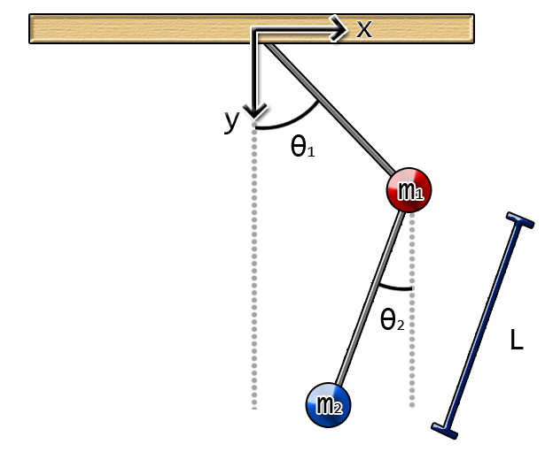
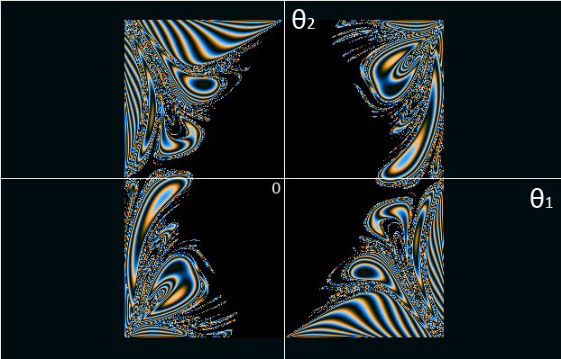

Explorador DP
El explorador DP te permite explorar la dinámica caótica del doble péndulo. En esta misma se basa el fractal de doble péndulo
Selecciona un punto en la imagen haciendo click y luego haga click en el botón lanzar simulación para ver la animación de un péndulo doble.
Al abrir la ventana aparecerá un mapa de doble péndulo predefinido, pero se puede cargar nuevos mapas guardando una imagen del péndulo doble (en formato BMP) y luego cargándolos en la ventana del explorador DP.
Pero antes, ¿qué es el mapa de péndulo doble?

El
péndulo doble es un sistema formado por dos
péndulos como los que se muestran en la figura. Cada péndulo
tiene un ángulo inicial θ1 y θ2. Entonces dejamos
que los péndulos se muevan ¡y sorpresa! El movimiento
del péndulo es completamente caótico. Para graficar la
dinámica caótica del movimiento del péndulo
podemos hacer un mapa donde grafiquemos el resultado del movimiento
del doble péndulo respecto a los ángulos iniciales. En
el fractal del doble péndulo lo que se hace es ver si alguna
de las pasas da la vuelta (lo que significa un ángulo mayor a
180°). Si no da la vuelta se marca el pixel como negro, si da la
vuelta entonces se colorea de acuerdo al tiempo que le tomó
voltearse. De este procedimiento se obtiene una imagen como esta:

El explorador DP te permite visualizar este movimiento dependiendo de los ángulos iniciales.